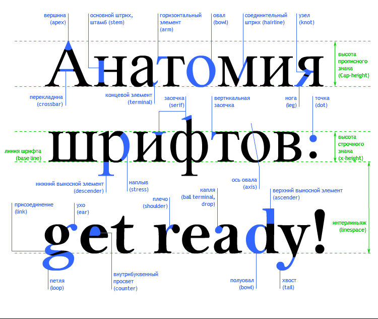

Шрифт устроен так:

В этой схеме отмечены элементы:
Так же на схеме изображены используемые в шрифте расстояния (размеры) и линии:
Базовая линия шрифта (base line);
Высота прописного знака (cap-height) - т.е. высота большой буквы;
Высота строчного знака (x-height) - т. е. высота маленькой буквы;
На данной схеме не указан кернинг (kerning) - т. е. расстояние между буквами в слове. Это сделано потому, что кернинг не является константной характеристикой шрифта. В зависимости от формы рядом стоящих букв, расстояние между буквами будет разное (если это не моноширинный шрифт).